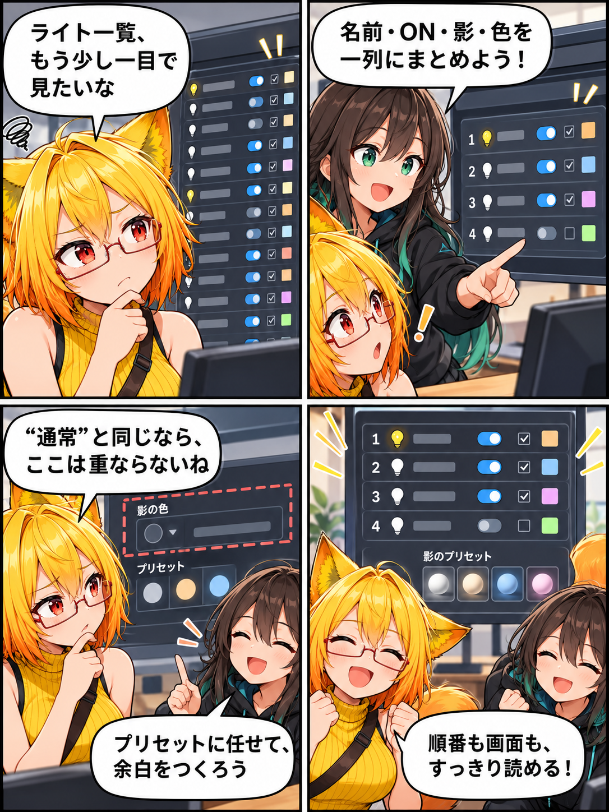

2026.10.11 / Development Log
光を迷わせない、操作を整える日
デスクトップ版の照明操作を見直し、一覧の情報を一列に集め、影色の重複した入口を整理しました。
開発実績の記録です。集計期間は 2026-10-10 03:00:00 JST から 2026-10-11 02:59:59 JST。対象ブランチは main、集計終了時点のHEADは
05a43a74d7f5f14c5ef148637ba52cb99292177d、対象は12コミットです。未コミットの変更は含めていません。
ライト一覧を、一列で読めるように
ライト一覧の行をコンパクトにし、ライト名、ON、影、色の操作を横一列へ整理しました。ライト名には番号を付け、再利用される行でも表示順を毎回確定することで、番号と縦並びが食い違わないようにしています。
重なる影色の入口を、プリセットへ
アバター陰影では、初期値の「通常」と同じ意味になる影色変更行を取り除きました。影色を選ぶ役割は下のプリセットに集約し、選択肢を保ったまま縦の余白を節約しています。
操作と環境表示の回帰も見直す
デスクトップ操作と環境表示の回帰を修正し、上下バーの角丸も見直しました。表示を軽くするだけでなく、操作中に必要な情報を追いやすくするための調整です。
4コマの裏話
今回は「余白の物語」です。不要な入口を一つ減らしても、プリセットに役割が残れば選べることは変わりません。漫画では、整理前の迷いから、役割を集めた後の読みやすさへ進む流れにしました。
まとめ
照明の操作を一列に整え、影色の重複をなくし、一覧の順序も安定させました。小さな画面上の整理を積み重ねて、アバターと環境を調整する時間をより素直なものにしていきます。
本日のひとこと
選択肢は残して、迷う場所だけ減らそう。